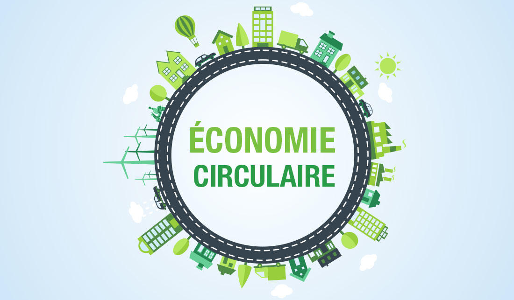

LE RÔLE D'ECONOCOM
Econocom est une entreprise qui œuvre pour la transformation numérique et écologique. La transition numérique étant la nature même de leur activité, elle permet aux autres entreprises de réduire leur impact sur l’écologie. Faisant partie des plus grandes ESN Françaises, Econocom se doit donc de montrer l’exemple.
SES ACTIONS
Econocom met en place la collecte d’équipements digitaux. Au total, ce sont plus de 430 000 équipements Le confinement lors de la COVID-19 met en lumière ce manque d’équipements qui a empêché certains élèves de suivre correctement les cours à distance. Aujourd’hui, Econocom accompagne ses clients dans l'inscription de leurs achats numériques.

SOBRIÉTÉE NUMÉRIQUE
Le groupe bâtit des plateformes digitales en cherchant le meilleur compromis entre plateforme et impact sur l'environnement afin de définir ainsi le vrai besoin du client en proposant en lui proposant des solutions adaptées. Toutes ces démarches étant réalisées en bannissant toute action énergétique inutile, ou autres équipements excessif en ressources.